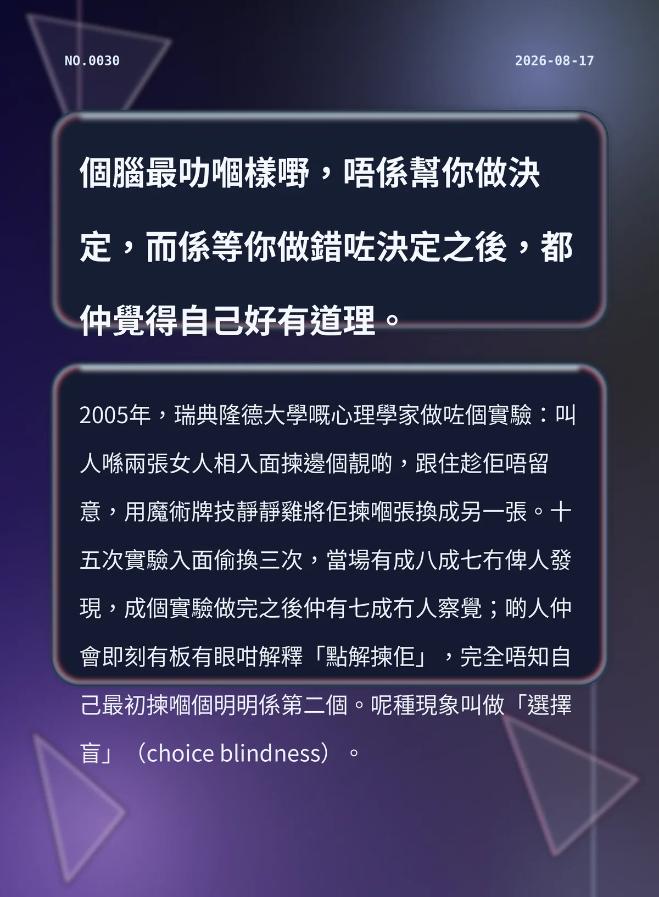

個腦最叻嗰樣嘢，唔係幫你做決定，而係等你做錯咗決定之後，都仲覺得自己好有道理。
2005年，瑞典隆德大學嘅心理學家做咗個實驗：叫人喺兩張女人相入面揀邊個靚啲，跟住趁佢唔留意，用魔術牌技靜靜雞將佢揀嗰張換成另一張。十五次實驗入面偷換三次，當場有成八成七冇俾人發現，成個實驗做完之後仲有七成冇人察覺；啲人仲會即刻有板有眼咁解釋「點解揀佢」，完全唔知自己最初揀嗰個明明係第二個。呢種現象叫做「選擇盲」（choice blindness）。
67cc574fa1979255冷知识由执笔的模型自行查证。逐条断言、来源与所引原句存档在纯文字副本里，未经程序逐字校验，留作事后核实。